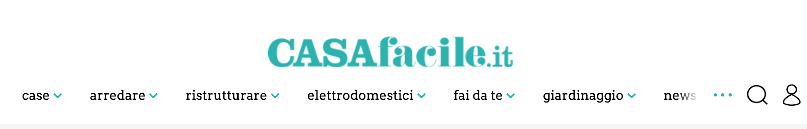
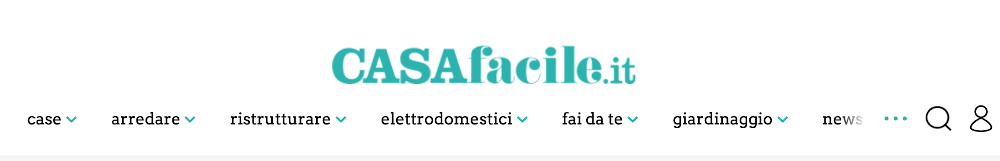

Barra di navigazione primaria
Barra di navigazione secondaria

Per riorganizzare le barre di navigazione ho usato la tecnica del card sorting (chiuso ed aperto), chiedendo a tre persone di divertirsi con i post it.
Ho deciso di riprogettare Casafacile.it, un sito che si occupa di home decor, interior design, arredamento di esterni e così via. La prima cosa che ho notato navigando nel sito sono le barre di navigazione. Entrambe, quella primaria e quella secondaria, sono ripetitive.
Barra di navigazione primaria
Barra di navigazione secondaria
Per riorganizzare le barre di navigazione ho usato la tecnica del card sorting (chiuso ed aperto), chiedendo a tre persone di divertirsi con i post it.

Oltre al card sorting, ho analizzato anche molti siti web, tra cui Architectural Digest e Country Living. Tutti e due hanno un design molto semplice e le barre di navigazione ben organizzate e non ridondanti.
Il passo successivo è stato creare dei prototipi di carta, sperimentando diverse soluzioni (sotto qualche esempio). Creare una nuova barra di navigazione è stata la priorità e grazie al card sorting è stato abbastanza veloce.


Per scegliere la palette giusta ho chiesto a dieci persone quale colore fosse per loro sinonimo di casa. Verde e rosso sono stati i colori prescelti (sotto le due palette di colori con le quali ho sperimentato diverse soluzioni). La decisione finale è ricaduta su una tonalità di verde.


In basso qualche esempio della versione finale del prototipo. La barra di navigazione primaria è stata ridotta, la secondaria non è più un menù a tendina. Il nuovo design è molto più semplice ed intuitivo, per esempio ho scelto di usare un font san serif. Credo che le immagini siano il vero focus di questo sito ed in una cornice essenziale risaltano maggiormente.
Homepage

Barra di navigazione secondaria

Pagina di articolo

Amo riprogettare siti web e Casafacile è stata una bella sfida. Il card sorting è stata probabilmente la parte migliore, sono convinta che sia una delle migliori tecniche per riorganizzare un sito web.
Credits Icons: CC BY 3.0